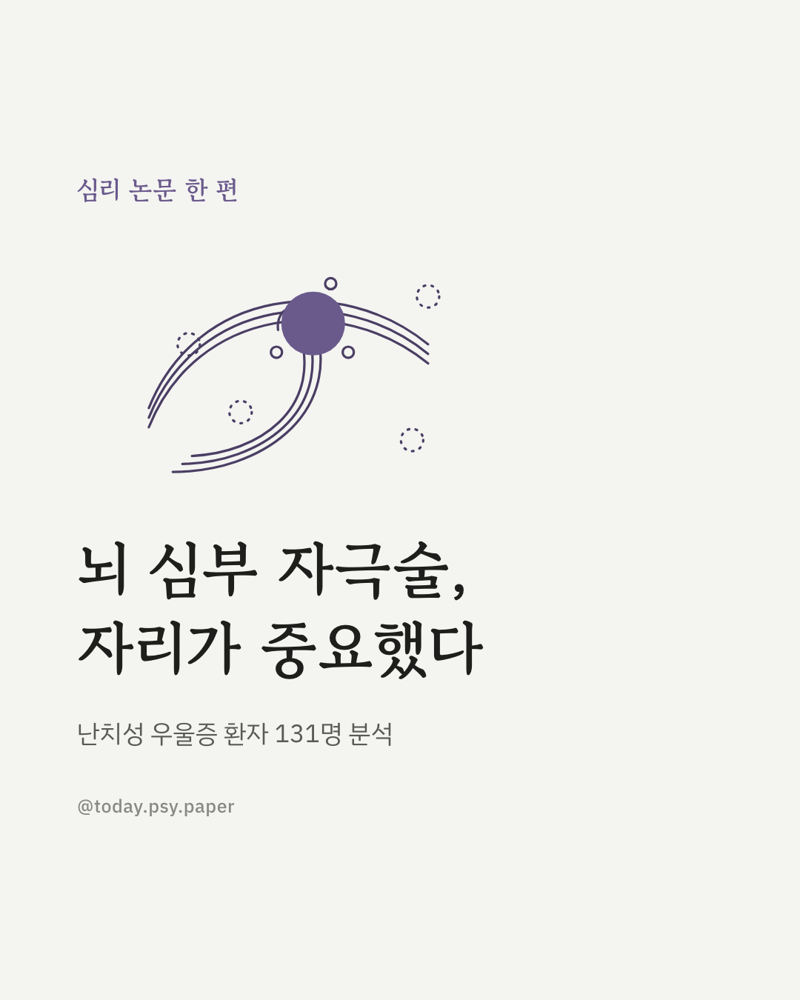
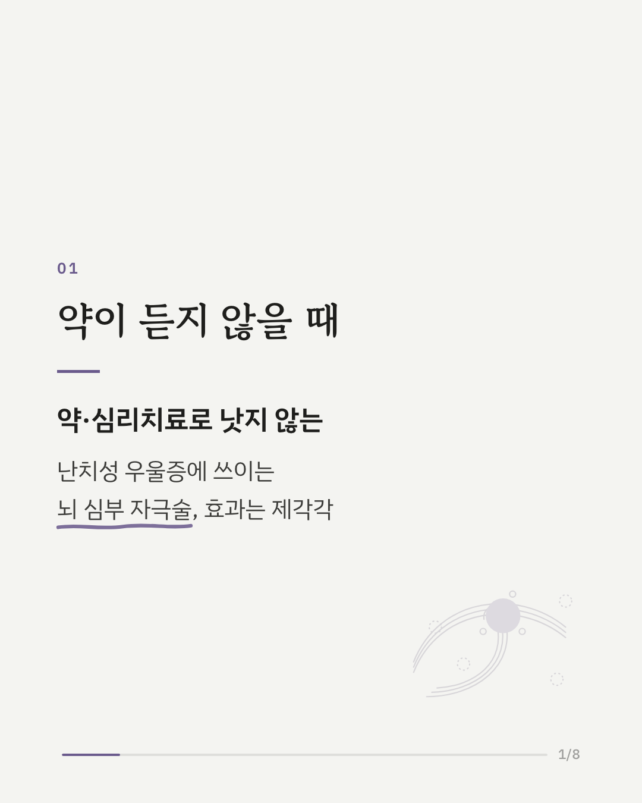
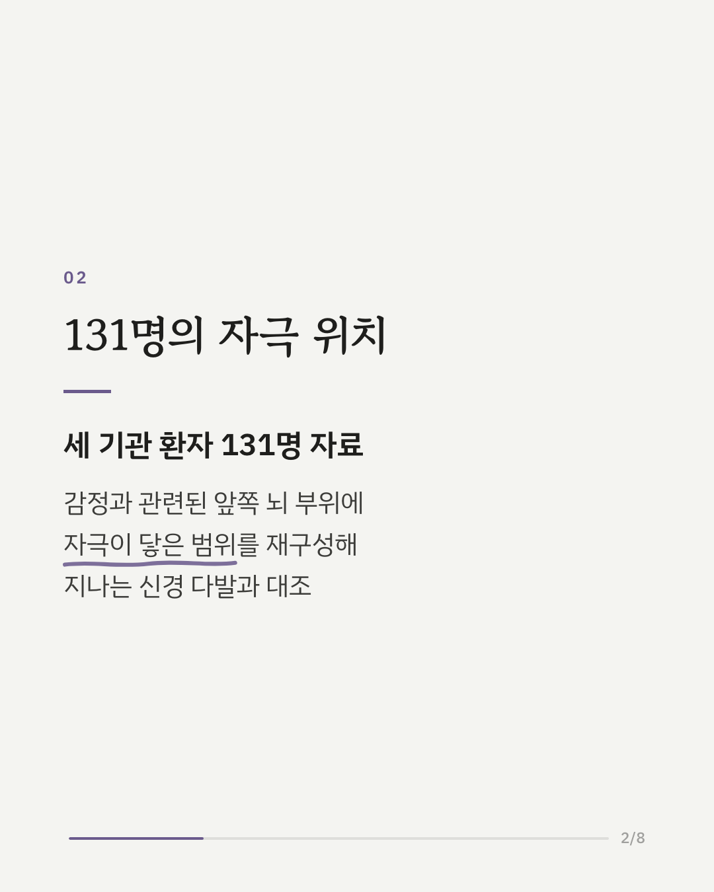
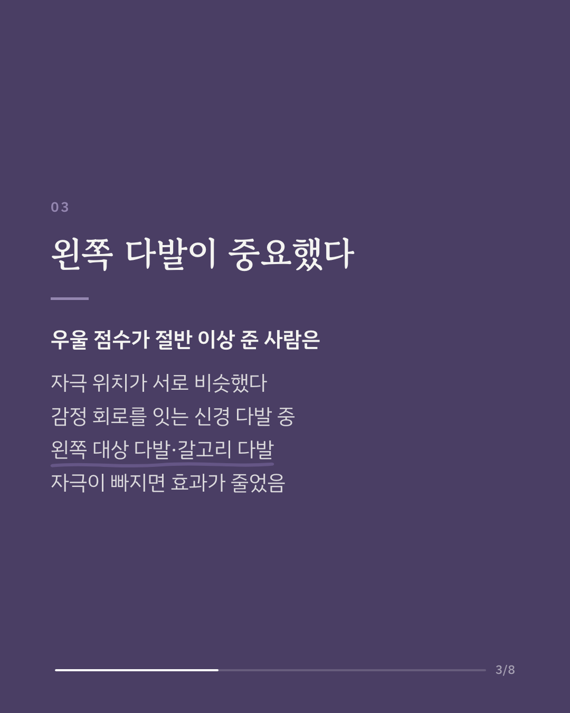
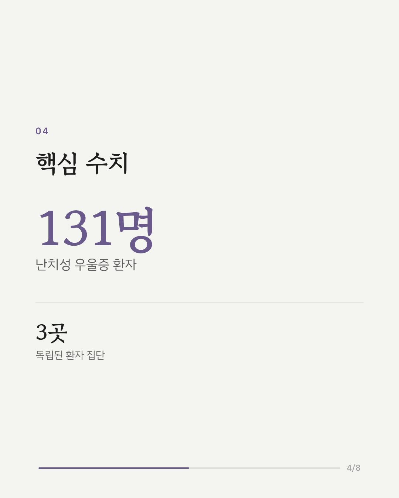
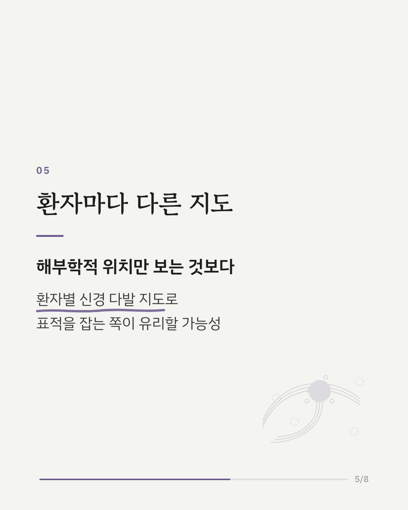
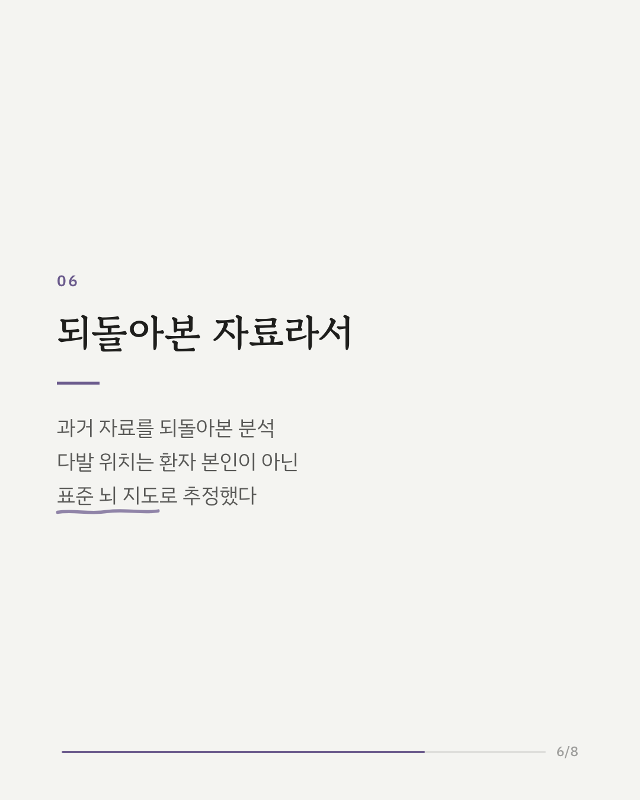
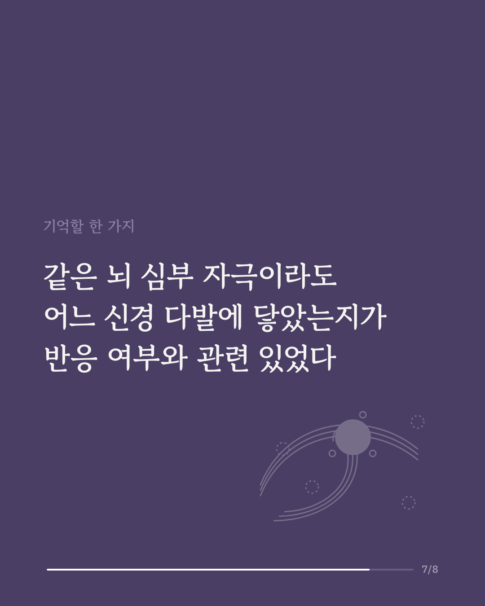
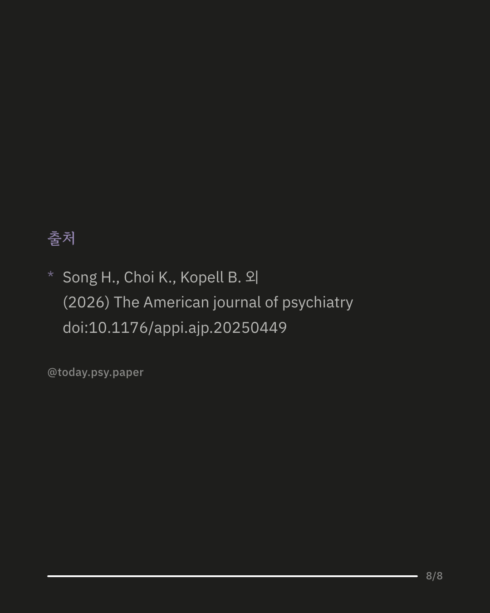

약과 심리치료로도 나아지지 않는 난치성 우울증에는 뇌 깊은 곳에 전극을 심어 전기 자극을 주는 뇌 심부 자극술이 시도되고 있습니다. 다만 같은 부위에 시술해도 효과가 사람마다 크게 달라, 정확히 어디를 자극해야 하는지가 과제로 남아 있었습니다. 연구진은 세 기관에서 시술받은 환자 131명의 자료를 모아, 각자의 기기 설정으로 자극이 닿은 범위를 재구성하고 그 범위를 지나는 신경 다발을 분석했습니다. 우울 점수가 절반 이상 줄어든 환자들은 자극 위치가 서로 비슷했고, 왼쪽 대상 다발과 안쪽 갈고리 다발을 자극하지 못한 경우는 효과가 줄어드는 것과 관련이 있었습니다. 연구진은 해부학적 기준점만으로 위치를 정하기보다 환자별 신경 다발 지도를 바탕으로 표적을 잡는 방식이 유리할 수 있다고 봤습니다. 다만 과거 자료를 되돌아본 분석이고, 신경 다발의 위치는 환자 본인의 뇌 영상이 아닌 표준 뇌 지도로 추정했습니다. 출처: The American Journal of Psychiatry (2026), 'Connectomic Determinants of Subcallosal Cingulate Deep Brain Stimulation for Depression' DOI: 10.1176/appi.ajp.20250449 #임상심리 #정신건강정보 #심리학연구 #논문리뷰 #난치성우울증 #뇌심부자극술 #우울증 #정신의학
python3 publish.py 42816827